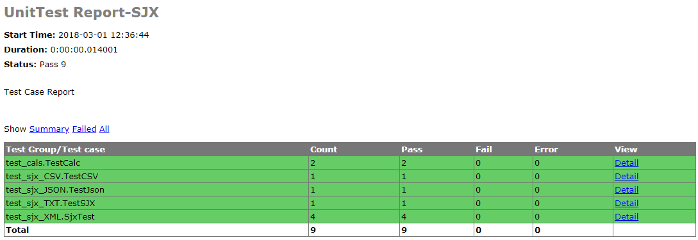

HTML报告生成
目标
对单元测试生成HTML报告进行简单回顾
1. 如何生成HTML报告？
1.1. 导入HTML报告模板模板
HTMLTestRunner.py
1.2 编写生成HTML模块
# 导入unittest包
import unittest
# 导入 HTMLTestRunner模板包
from UnitTest.Day02.ReadData.HTMLTestRunner import HTMLTestRunner
#导入时间包
import time
# 定义测试模块路径
dirpath='.'
disconver=unittest.defaultTestLoader.discover(dirpath,pattern='test*.py')
if __name__=='__main__':
#存放报告的文件夹
report_dir='../TestReport'
#报告名称含时间，时间格式
now=time.strftime("%Y-%m-%d %H_%M_%S")
#报告完整路径+名称
report_name=report_dir+'/'+now+'result.html'
#打开报告写入结果
with open(report_name,'wb')as f:
runner=HTMLTestRunner(stream=f,title="UnitTest Report-SJX",description='Test Case Report')
runner.run(disconver)
1.3 生成报告示例图
